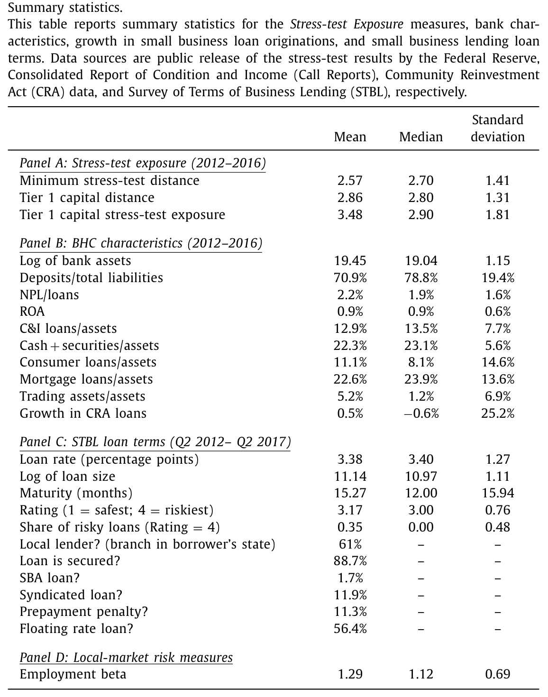
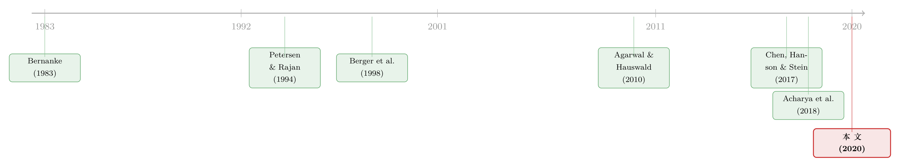

压力测试之后，银行把风险「赶」去了哪里？
本文读的是 Cortés, Demyanyk, Li, Loutskina & Strahan (2020, JFE)：危机后的银行压力测试，让受冲击最大的银行把小企业信贷从高风险市场「挪」向低风险市场，并抬高利率——但它挪动信贷的方式取决于一件看似无关的事：这家银行在当地有没有网点。在有网点、握有「软信息」的地方，它选择加价；在没有网点、贷款像大宗商品的地方，它选择撤退。而总量并没有下降，缺口被小银行补上了。
1 一个慢得反常的复苏
先看一组让人困惑的事实。
2008 年危机之后，美国的信贷整体上是恢复了的：到 2016 年，银行资产负债表上的工商业贷款（commercial and industrial loans, C&I）实际余额比 2007 年还高出 50% 以上。大企业的融资早就缓过来了。可偏偏有一类借款人迟迟没能回到危机前的水平——小企业。同样在 2016 年，银行账上的小企业贷款仍然低于 2007 年（见下文 Fig. 2）。

Table 1
为什么单单是小企业的复苏这么慢？最流行的一个解释，是「监管加码了」，而监管里最显眼的那个新工具，就是压力测试 (stress tests)。代表大银行利益的清算所协会（Clearinghouse）早就公开抱怨：压力测试相当于给小企业贷款和住房按揭隐性地加了一道过高的资本要求，把信贷「压」了下去（Clearinghouse, 2017; Covas, 2017）。
这听上去顺理成章。学术界关于银行「资本紧缩 (capital crunch)」的文献也支持这个方向——从 Bernanke (1983) 到 Peek and Rosengren (1997, 2000)，一长串研究都告诉我们：银行的股本一旦被冲击，放贷会成比例地收缩。压力测试恰恰是直接在「银行资本」和「放贷能力」之间架了一座桥。
于是，一个自然的故事是：压力测试 → 隐性提高资本要求 → 银行少放小企业贷款 → 小企业复苏慢。
这篇论文要做的，是把这个故事拆开来仔细看。而拆开之后，结论既证实了它的一半，又推翻了它的另一半。
2 把「压力测试冲击」做成一个可度量的变量
要谈因果，先得有个干净的处理变量。作者没有去比较「被测试的银行」和「没被测试的银行」——因为这两类银行天生就在无数维度上不同，这种比较一上来就被内生性污染了。他们的做法是：只在 32 家被压力测试的银行控股公司（bank holding companies, BHC）内部做文章，比较它们受测试冲击的「深浅」。
冲击深浅怎么量？美联储在 2012–2016 年每年都会披露每家 BHC 在九个季度前瞻窗口内、压力情景下的三个最低资本比率。作者由此构造了三个 「压力测试暴露度 (Stress-test exposure)」 指标。最核心的一个，是把三个资本比率里「最接近触线」的那个挑出来：
$$ \text{Minimum stress-test distance} = \min(\text{Stressed Tier 1 capital} - 6\%,\ \text{Stressed total risk-based capital} - 8\%,\ \text{Stressed leverage ratio} - 4\%) $$
这里的 6%、8%、4% 分别是三条资本比率的监管下限。为什么要取「最小值」？因为对不同 BHC、不同年份，最先快要触线的那条比率并不一样——在样本里，42% 的 BHC-年是 Tier 1 比率离下限最近，26% 是总风险资本比率，64% 是杠杆比率（加总超过 100% 是因为有并列）。哪条快绷断，就用哪条度量压力。
另外两个度量是 Tier 1 capital distance（压力情景下 Tier 1 比率与 6% 下限的距离）和 Tier 1 capital stress-test exposure（初始 Tier 1 比率减去压力情景下的 Tier 1 比率，直接刻画「会损失多少资本」）。为了让回归系数好读，作者把前两个距离变量反号——这样三个变量统一成「数值越大 = 测试冲击越重」。
这个度量为什么不太可能内生于小企业放贷？因为它由 BHC 的整个贷款组合决定，而小企业贷款在大银行的资产里只占很小一块——资产超过 500 亿美元的 BHC，小企业贷款余额平均不到总资产的 5%（2011 年以来不到 3.5%）。一条占比这么小的业务，反过来去驱动整家 BHC 的压力测试结果，几乎不可能。逆向因果的口子被堵得很死。
从 Table 1 的描述性统计看，Minimum stress-test distance 中位数 2.70、标准差 1.41，Tier 1 capital stress-test exposure 均值 3.48、标准差 1.81——横截面上差异相当大，这正是识别所需要的变异。
3 第一步：银行确实在「躲」风险
有了暴露度，第一个要问的问题很直接：受测试冲击越深的银行，是不是在把信贷从高风险的地方挪走？
这里作者用的是按《社区再投资法》(Community Reinvestment Act, CRA) 报送的小企业贷款发放数据，颗粒度是银行-县-年。这个层级的好处在于：可以放进县×时间固定效应 (county-time fixed effects)，把同一个县在同一年里所有的需求侧波动一把吸收掉——剩下的，就主要是供给侧的故事了。
可「市场风险」本身怎么量？作者造了一个新指标：就业 beta (employment beta)——当地就业增长对全国就业增长的敏感度，思路完全类比 CAPM 里组合的 beta。一个县的就业越是「随大盘起落」，它就越像高风险市场。样本里就业 beta 均值 1.29、中位数 1.12。
结果很清楚：压力测试暴露度越高的银行，越是减少对高风险县的小企业放贷，相对于低风险县。量级上，暴露度每上升一个标准差，最高风险四分位的县（就业 beta 最高的那批）比最低风险四分位的县，小企业贷款发放多下降约 2.5%。
但真正关键的一步在于一个交互效应：这种数量上的撤退，几乎只发生在银行没有网点的县。在银行有分支机构、握有当地信息的地方，数量并没有显著下降。
这就埋下了全文的伏笔——同样是「躲风险」，银行在「熟悉的地盘」和「陌生的地盘」上，用的是两套完全不同的手法。
4 反转：在熟悉的地方加价，在陌生的地方撤退
接着，一个自然的问题是：既然在有网点的市场银行没有减少数量，那它对风险无动于衷吗？当然不是——它换了一种武器：价格。
要看价格，CRA 数据不够了，因为它只有数量。作者转向另一套数据：《工商业贷款条款调查》(Survey of Terms of Business Lending, STBL)。这是贷款层面的微观数据，记录每家被调查银行在每季度某一个营业周内新发放贷款的全部价格和非价格条款——利率、承诺金额、期限、抵押、是否浮动利率等等，覆盖 32 家被测试 BHC 中的 26 家，时间从 2012Q2 到 2017Q2。更妙的是，STBL 自带一个 1–4 的贷款风险评级（1 最安全、4 最危险），让作者能在「同一家银行、同一时点」里直接比较不同风险的贷款。
主要结果如下：
其一，压力测试推高了小企业贷款利率。 暴露度每上升一个标准差，小企业贷款利率上升约 32 个基点。这个量级不小——样本里贷款利率的整体波动也才 127 个基点。非价格条款也同步收紧：暴露度每升一个标准差，贷款期限缩短约 13%。
其二，加价主要发生在「本地市场」。 暴露度每升一个标准差，在银行设有网点的本地市场，利率上升约 38 个基点；而在非本地市场只上升 14 个基点。
其三，效应集中在风险贷款上。 对最低风险（评级 1）的贷款，暴露度对利率没有任何影响；只有在评级最高的两档里，加价才出现。而把「本地」和「风险高」叠加在一起——本地的高风险贷款——暴露度每升一个标准差，利率上升约 50 个基点。这些效应即便加入 BHC×时间固定效应、把控股公司层面所有不可观测的异质性都吸收掉，依然稳健。
把第 3 节和第 4 节拼起来，全文的核心机制就浮出水面了：
银行面对压力测试隐含的资本负担，要把这笔成本「转嫁」出去。在有网点、有软信息的地方，借款人很难轻易换银行（关系型贷款的黏性），银行于是加价；在没有网点、贷款像大宗商品的地方，一旦加价借款人立刻跑去别家，银行于是干脆减量、退出。一句话：在熟悉的地盘上收过路费，在陌生的地盘上拔营。
这也解释了第 3 节那个不对称——为什么数量的下降只出现在「没有网点」的县：因为在「有网点」的县，银行用的是价格而非数量这把刀。
5 但总量竟然没掉
到这里，故事似乎已经完整了：受冲击的银行确实压缩了小企业信贷供给。那么，开篇那个「小企业复苏慢」的谜题，是不是就被压力测试解释了？
于是真正的反转出现了。
作者直接去看县级总量：那些更依赖被测试银行的县，危机后小企业贷款的增长是不是更慢？答案是——没有。县级小企业放贷的增长，在「被测试银行占比高」的市场里并不更低。被测试的大银行撤出的那部分供给，被小银行接住了：小银行在那些原本依赖被测试大银行的地方，扩大了自己的市场份额。
换句话说，压力测试做的不是「减少」小企业信贷，而是重新配置——把信贷从受测试的大银行手里，挪到了更本地化的信贷来源那里。所以，开篇那个流行的指控（压力测试拖慢了小企业复苏）在总量层面站不住脚。
这一点和早年 Berger, Saunders, Scalise and Udell (1998) 的发现遥相呼应：上世纪 90 年代的银行并购潮也曾压缩并购方的小企业放贷，但保持独立的小银行补上了缺口。三十年后，压力测试在小企业信贷市场里上演了同一出「大银行退、小银行进」的替代戏。（关于小银行如何接住大银行退出后的缺口，也可参见《银行撤退之后，是谁悄悄接住了那批「借不到钱」的公司？》。）
6 文献脉络
把这篇论文放回它生长的那条线里看，会更清楚它的位置。
最上游，是银行「资本紧缩」这条老脉络：Bernanke (1983) 开端，到 Bernanke and Lown (1991)、Kashyap and Stein (1995)、Peek and Rosengren (1997, 2000)，反复证明了一件事——银行股本受冲击，放贷会收缩。压力测试不过是给这条因果链装上了一个新的、由监管直接驱动的「冲击源」。
中游，是关系型贷款与「软信息」这条脉络：Rajan (1992)、Petersen and Rajan (1994)、Degryse and Ongena (2005)、Berger et al. (2005)、Agarwal and Hauswald (2010) 反复强调，距离决定了信息，近处的银行握有不易转移的软信息，因而借款人难以轻易转投他人。本文的「本地加价、异地撤退」正是建立在这块基石上。

最贴近的，是直接研究压力测试与放贷的那一小簇近作：Acharya, Berger and Roman (2018) 发现被测试银行减少大企业贷款供给、对高风险借款人加价；Bassett and Berrospide (2018) 却没找到压力测试对整体贷款增长的负面影响；Chen, Hanson and Stein (2017) 记录了四大行小企业放贷的急剧下滑；Bord, Ivashina and Taliaferro (2018) 发现危机损失最大的银行砍小企业贷款最狠。本文的独特贡献，是第一次把「对压力测试的暴露度」当成连续的处理变量，刻画它对小企业供给的不利影响，并进一步指出——这种供给压缩没有转化为总量下降，因为小银行填补了缺口。
（压力测试这条线还有不少有意思的延伸：当所有银行都用同一套模型应考，会不会催生系统性的「单一栽培」，可参见《当所有银行都去猜同一张考卷：压力测试与系统的「单一栽培」》；压力测试还会反过来改变银行的人力资本投资，见《银行招谁来管风险》。）
7 评论与延伸（Q&A + 研究方向）
(a) 几个可能的疑问
Q：只在 32 家被测试银行内部比较「暴露度深浅」，这个识别可信吗？
这是本文最聪明的设计。它回避了「被测试 vs 未被测试」这种天生不可比的比较，转而利用同一群大银行之间、由各自资产组合决定的压力测试结果差异。再叠加县×时间固定效应吸收需求，BHC×时间固定效应吸收控股公司层面的一切异质性，剩下的变异相当干净。加上小企业贷款只占大银行资产不到 5%，逆向因果的空间极小。
Q：「就业 beta」这个市场风险度量靠谱吗，会不会只是在捕捉别的东西？
它的好处是构造透明、与压力测试无关——纯粹刻画一个县的就业对全国大盘的敏感度，类比 CAPM 的 beta。但它确实是个总量风险代理，可能与当地产业结构、对周期敏感的行业占比等纠缠在一起。好在核心结论（高 beta 县撤退更多、且只在无网点县）需要的是「相对排序」，对度量的绝对水平不那么敏感。
Q：为什么加价偏偏只发生在高风险贷款上，低风险贷款一点反应都没有？
因为压力测试惩罚的是「压力情景下的损失」，而损失主要来自风险敞口。对安全贷款，资本负担本就轻，没必要加价；对高风险贷款，隐含资本成本陡增，银行才有动力把它定价进利率。这恰恰说明，价格变化是冲着「资本负担」去的，而非普遍性的提价。
Q：总量没下降，是不是说明压力测试「没有副作用」？
不能这么说。总量不变，但结构变了：信贷从大银行流向小银行、从异地流向本地。这种再配置本身可能有福利含义——比如小银行的资金成本、风险管理能力是否撑得起这部分新增敞口，是否在下一次危机里更脆弱。本文回答了「总量没掉」，但没回答「这样的再配置好不好」。
Q：这和 Acharya et al. (2018) 关于大企业贷款的结论是一回事吗？
方向一致（都发现加价、对高风险借款人更狠），但本文的舞台是小企业，而小企业贷款的核心特征是关系型、依赖软信息。正是这个特征，让本文挖出了「本地加价 vs 异地撤退」这条大企业贷款里看不到的不对称——这是它相对于前者的增量。
Q：用 STBL 数据会不会有样本偏差？
STBL 只覆盖随机抽中的一周、且只有 32 家里的 26 家 BHC，是个子样本。好在它提供了 CRA 数据没有的价格和风险评级，两套数据互为补充——CRA 看数量、STBL 看价格，结论彼此印证（安全贷款份额随暴露度上升、且只在非本地市场上升），交叉验证削弱了单一数据偏差的担忧。
(b) 几个可能的研究问题与提案
1. 把同样的「本地 vs 异地」逻辑搬到公司债市场
【经济故事】本文的核心是「软信息黏住借款人 → 银行能加价」。公司债是另一个极端：高度标准化、可转让、几乎没有关系黏性。那么当承销/做市银行受压力测试冲击时，它对发行人的影响会不会只有撤退、没有加价？这能反向检验本文的机制。【可行性】中。需要把 BHC 的压力测试暴露度匹配到它承销/做市的债券（Mergent FISD + TRACE），用发行人-时间固定效应识别。难点在于债券市场银行黏性弱，处理效应可能偏小。
2. 被测试银行退出后，接盘的小银行是否埋下了下一轮风险
【经济故事】小银行填补了大银行退出的高风险县。如果这些小银行风险管理较弱、资本较薄，那么压力测试可能在「降低大银行系统性风险」的同时，把风险转移到了监管视野之外的小银行身上。【可行性】中高。用 CRA 份额变化定位「接盘县」，再追踪当地小银行后续的不良率、倒闭概率（FDIC 数据）。识别上可用本文的暴露度作为「外生退出」的工具。
3. 外资银行在美国小企业市场扮演了什么角色
【经济故事】本文关注美国本土大银行的退出与本土小银行的进入，但在美经营的外资银行同样受（或不受）美式压力测试约束。如果外资银行在某些高风险县接了盘，其行为模式（加价还是撤退）会因为它「天然缺乏本地软信息」而更偏向撤退吗？【可行性】中。需要识别外资银行的美国分支放贷（CRA 数据含机构归属），但外资银行小企业敞口本就有限，样本可能稀薄。
4. 用就业 beta 这把尺子重新审视信贷的周期性再配置
【经济故事】「就业 beta」是个轻便的县级周期风险度量。它可以脱离压力测试这个具体场景，去回答一个更一般的问题：每当银行资本受冲击（不限于压力测试），信贷是否系统性地从高 beta 县流向低 beta 县？这等于给「flight to quality」画一张地理地图。【可行性】高。CRA 数据 + 就业 beta 已经现成，把冲击换成更宽口径（如危机损失、QE 等）即可。
8 我的判断
这篇论文的贡献，在我看来不在于「证明压力测试压了信贷」——那几乎是预期之中的——而在于它把『怎么压』讲清楚了：用「本地加价 / 异地撤退」这条由关系型贷款理论推出的不对称，把一个笼统的「监管收紧」拆成了一个有机制、有异质性、可证伪的故事。再加上「总量没掉、小银行补位」这个反转，它直接回击了「压力测试拖慢小企业复苏」的政策指控，分寸把握得相当好。
对识别，我有两点保留。其一，就业 beta 终究是个总量周期代理，它和当地产业构成、对利率敏感的行业占比可能纠缠，作者虽用固定效应缓解了大部分，但「高 beta 县撤退更多」里到底有多少是纯粹的风险再平衡、有多少是产业层面的需求差异，仍值得更细的分解。其二，「总量没下降」是个安慰人的结论，但它掩盖了再配置的代价——接盘的小银行是否承担了与其能力不匹配的风险，本文没有触及，而这恰恰是下一步最该看的。
我最想看到的后续，是把时间拉长：被测试大银行退出、小银行补位的格局，在下一次真正的衰退里会怎样？如果那些高风险县的信贷如今系于一批资本更薄的小银行，那么压力测试在「让大银行更安全」的同时，是否悄悄把脆弱性搬到了别处——这才是检验这场再配置成败的终极考题。
参考文献
Acharya, V., Berger, A., Roman, R. (2018). Lending implications of U.S. bank stress tests: costs or benefits? Journal of Financial Intermediation 34, 58–90.
Agarwal, S., Hauswald, R. (2010). Distance and private information in lending. Review of Financial Studies 23(7), 2757–2788.
Bassett, W., Berrospide, J. (2018). The impact of post stress tests capital on bank lending. Board of Governors of the Federal Reserve System, 2018–2087.
Berger, A., Saunders, A., Scalise, J., Udell, G. (1998). The effects of bank mergers and acquisitions on small business lending. Journal of Financial Economics 50, 187–229.
Berger, A., Miller, N., Petersen, M., Rajan, R., Stein, J. (2005). Does function follow organizational form? Evidence from the lending practices of large and small banks. Journal of Financial Economics 76(2), 237–269.
Bernanke, B. (1983). Nonmonetary effects of the financial crisis in the propagation of the great depression. American Economic Review 73(3), 257–276.
Bord, V., Ivashina, V., Taliaferro, R. (2018). Large banks and small firm lending. NBER Working Paper No. 25184.
Chen, B., Hanson, S., Stein, J. (2017). The decline of big-bank lending to small business: dynamic impacts on local credit and labor markets. NBER Working Paper No. 23843.
Cortés, K., Demyanyk, Y., Li, L., Loutskina, E., Strahan, P. (2020). Stress tests and small business lending. Journal of Financial Economics 136, 260–279.
Peek, J., Rosengren, E. (2000). Collateral damage: the effects of the Japanese banking crisis on real activity in the United States. American Economic Review 90(1), 30–45.
Petersen, M.A., Rajan, R.G. (1994). The benefits of lending relationships: evidence from small business data. Journal of Finance 49(1), 3–37.
Rajan, R. (1992). Insiders and outsiders: the choice between informed and arm's-length debt. Journal of Finance 47(4), 1367–1400.